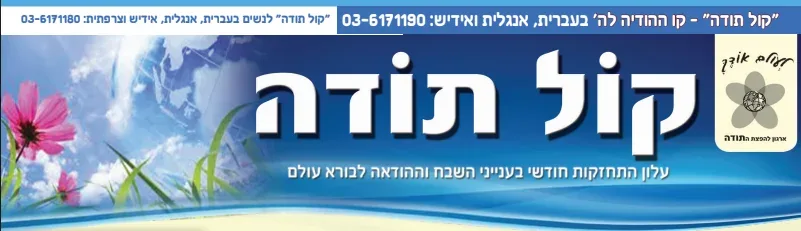
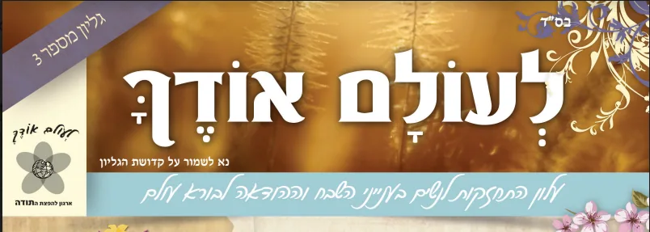

לקרוא את העלונים של קול תודה
זמן לא רק לאחר הקמת קו קול תודה (ראה בשמיעה). הוחלט להרחיב את פעילות ההודיה גם לעלון חודשי בשם "קול תודה" המחולק בבתי כנסיות ובתי מדרשות בכל רחבי הארץ, בדואר האלקטרוני, ולמנויים נשלח העלון לביתם. ב''ה זוכה העלון לאהדה רבה בקרב הציבור כולו.
בעלון יש מאמר תורני הקשור להודיה ולחודש הבעל''ט, סיפורי צדיקים כיצד היו הם מודים לה' יתברך, סיפורי ישועות משלים ועוד ועוד.
לקבלת העלון בדואר האלקטרוני יש לשלוח בקשה לכתובת אמייל ? kt6171190@gmail.com
למנוי בדואר לעלונים בעברית יש להתקשר ל 055.6789852
עלון קול תודה יוצא מידי חודש גם באנגלית בדואר אלקטרוני, ניתן לבקש בכתובת KolToda.Eng@gmail.com

ניתן לעשות מנוי לשנה לקבלת העלונים
מחיר מנוי 180 ש"ח לשנה
מידי פעם יוצאים עלונים מיוחדים לנשים בשם לעולם אודך
